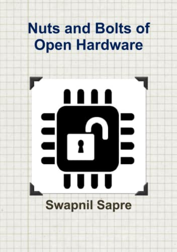
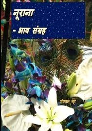

मुंगी उडाली आकाशी: When the Small Transcends the Infinite
Sant Muktabai's abhang about the ant that swallowed the sun, read as a lesson for how tiny edge chips and small teams can do the impossible.
SwapnaLoka Writing & Poetry
Books on technology and music, articles from the LinkedIn desk, and Hindi poetry as नूर, Sopaan Noor.
Writing
I write technical guides for engineers, a course book on rhythm, and Hindi verse under the pen name Noor / Sopaan Noor. Click a cover to buy it on Amazon.

Technology · 2012 Technology · 2012
Technology · 2012
 Music · 2016
Music · 2016

Hindi poetryIn progress चुस्की · Chuski, a new collection of Hindi poetry by Sopaan Noor
All books by Swapnil Sapre on Amazon →
Sant Muktabai's abhang about the ant that swallowed the sun, read as a lesson for how tiny edge chips and small teams can do the impossible.
A practical framework that weighs accuracy, latency, power, memory and cost when choosing a model for a microcontroller-class device.
Why the SDK, not the silicon spec sheet, decides whether developers adopt an AI chip, and how to design for it from day one.
Hindi poetry · हिंदी काव्य
शब्दों में सुर, सुरों में शब्द।
Rhythm in words, words in rhythm.
नूराना · भाव संग्रहNext: चुस्की (Chuski), a collection now in progress.
If rhythm is my first instrument, words are my second. I write in Hindi as "Noor" (light) and "Sopaan Noor" (steps of light). My ghazals, nazms, geet and bhajans are about love, longing, devotion, family, Dharma and the quiet joy of ordinary days.
For promoting Hindi literature I have been honoured as a "Literary Colonel". I organize Kavi Sammelans and poetry ensembles where poets, singers and musicians share one stage, and I often set my own verse to tune and taal.